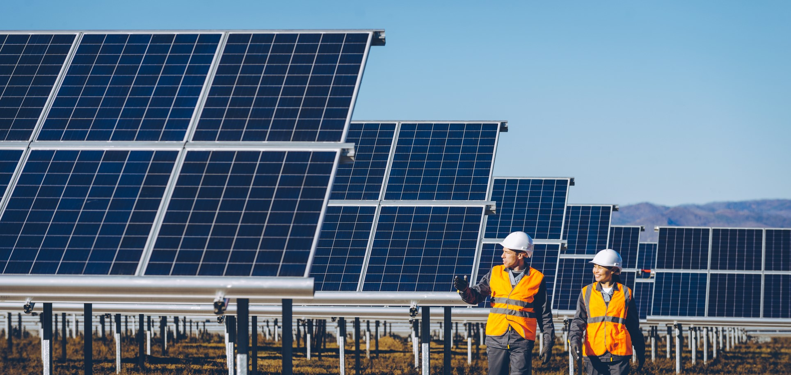

¿Que tipos hay?
-
Energia Eólica
La energía eólica se obtiene al convertir el movimiento de las palas de un aerogenerador en energía eléctrica. Un aerogenerador es un generador eléctrico movido por una turbina accionada por el viento, sus predecesores son los molinos de viento. La energía eólica se ha convertido en una fuente de generación de electricidad clave para el cambio del modelo energético, más limpio y sostenible. La mejora de la tecnología permite que algunos campos eólicos produzcan energía eléctrica tan barata como lo hace el carbón o las centrales atómicas.
-
Energia Solar
La energía solar, obtenida a partir del aprovechamiento de la radiación electromagnética procedente del Sol. La radiación solar que alcanza la Tierra ha sido aprovechada por el ser humano desde la antigüedad, mediante diferentes tecnologías que han ido evolucionando. Es una de las llamadas energías renovables o energías limpias, que podrían ayudar a resolver algunos de los actuales problemas más urgentes que afrontan los seres vivos. La fuente de energía solar más desarrollada en la actualidad es la energía solar fotovoltaica.
-
Energía Hidraulica

La energía hidráulica , energía hídrica o hidroenergía es aquella que se obtiene del aprovechamiento de las energías cinéticas y potenciales de la corriente del agua, saltos de agua o mareas (grandes cantidades de agua). Se puede transformar a diferentes escalas. Generalmente se considera como un tipo de energía renovable puesto que no emite productos contaminantes. Otros consideran que produce un gran impacto ambiental debido a la construcción de las presas, que inundan grandes superficies de terreno y modifican el caudal del río y la calidad del agua.
| Fuentes de energía renovables: | Fuentes de energía no renovables: | Borrar | Modificar |
|---|